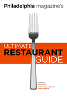

<body bgcolor="#FFFFFF" text="#000000" link="#0000FF" vlink="#CC0000" alink="#CC0000"><center><hr width="350" size="1" align="center" noshade>From <i>Philadelphia</I> magazine, a restaurant guide to the city's best food<hr width="350" size="1" align="center" noshade><p><a href="https://cdcshoppingcart.uchicago.edu/Cart/ChicagoBook.aspx?ISBN=9781592131464&&PRESS=temple" target="_top">Buy this book!</a> | <a href="https://cdcshoppingcart.uchicago.edu/Cart/Cart.aspx?PRESS=temple" target="_top">View Cart</a> | <a href="https://cdcshoppingcart.uchicago.edu/Cart/Cart.aspx?PRESS=temple" target="_top">Check Out</a></p><p></p></center><!--none//--><h1>Philadelphia magazine's Ultimate Restaurant Guide</h1>
<H2><!-- Foreword by Maria Gallagher --></H2>
<h3>edited by April White, foreword by Maria Gallagher</h3>
<P>paper 1-59213-146-8 $16.95, Aug 04, <FONT COLOR=#990033>Out of Print</FONT>
<br>Electronic Book 1-43990-149-X $16.95 <FONT COLOR=#990033></FONT>
<BR> 192 pp
5.5x8.25
3&nbsp;halftones
</P><p>When renowned national food critic John Mariani ranked Philadelphia's food scene among the top ten in the country, placing it alongside longtime culinary destinations New York and San Francisco, nobody at <i>Philadelphia</I> magazine was surprised. That's what the magazine's food critics&#151always in search of the best of Philly&#151have known for years. Now, the <i>Philadelphia magazine's Ultimate Restaurant Guide</i> condenses their comprehensive knowledge&#151and thousands of meals&#151into one informative, easy-to-digest handbook, essential for both the Philadelphia foodie and the hungry tourist.
<p>What's on the menu:
<ul><li><p>Profiles of Philadelphia's most influential chefs and restaurant owners, including Le Bec-Fin's Georges Perrier, and restaurant mogul Stephen Starr.
<li><p>A behind-the-scenes look at the Philadelphia food purveyors, who are responsible for some of the nation's hottest food trends&#151from La Colombe coffee to Metropolitan Bakery's artisanal breads to Jubilee Chocolates.
<li><p>Reviews of more than 230 of the best restaurants in the Philadelphia region, from Center City mainstays Susanna Foo and Morimoto to suburban destinations Alison at Blue Bell and Carmine's Caf�.
<li><p>Easy-to-use index of restaurants by cuisine and neighborhood.</ul>
<BR>&nbsp;<h2>Excerpt</h2><P>Excerpt available at <a href="http://www.temple.edu/tempress">www.temple.edu/tempress</a></p>
<BR>&nbsp;<h2>Reviews</h2>
<p><i>"The [book] nicely wraps up some of the best and most popular eateries that the Philadelphia area had to offer, as well as some of the best writing about those places."</i>
<br>&#151<b><i>The Legal Intelligencer</i></b>
<BR>&nbsp;<h2>Contents</h2><P>
<p>Foreword &#150 Maria Gallagher
<p><b>Part I: The People</b>
<br>1. "Everybody Went to Brookie's" &#150 Amy Donahue
<br>2. What's Eating Georges Perrier? &#150 Benjamin Wallace
<br>3. The Last Neil Stein Story &#150 Stephen Rodrick
<br>4. The Reincarnation of Stephen Starr &#150 Larry Platt
<br>5. The Mysterious Mr. Chodorow &#150 Amy Donohue
<p><b>Part II: The Ingredients</b>
<br>6. The Great Grape Hunt &#150 Benjamin Wallace
<br>7. Chocolates With a Conscience &#150 Victor Fiorillo
<br>8. Thank You for Smoking &#150 Sasha Issenberg
<br>9. Four-Star Farmers &#150 Amy Donohue
<br>10. Miracle of the Loaves &#150 April White
<br>11. Hot Potatoes &#150 Francine Maroukian
<br>12. Caffeine High &#150 Benjamin Wallace
<br>13. Brewery Town &#150 Victor Fiorillo
<p><b>Part III: The Restaurants</b>
<br>14. Is Philadelphia a Great Restaurant Town or What? &#150 John Mariani
<br>15. The Reviews
<p>Index &#150 Cuisine
<br>Index &#150 Neighborhood
<br>Acknowledgments
</P><BR>&nbsp;<H2>About the Author(s)</H2>
<P><b>April White</b>, managing editor of <i>Philadelphia</i> magazine, is well fed. She regularly reports on food, drink, and Philadelphia's restaurant scene for the magazine and authored <i>The Essential Guide to Eating and Drinking in Philadelphia</i>.</P>
<P><b>Maria Gallagher</b> is a food critic for <I>Philadelphia</I> magazine.</P>
<BR><H2>Subject Categories</H2>
<p><A HREF="/tempress/general.html" TARGET="_top">General Interest</a>
<BR><A HREF="/tempress/philly.html" TARGET="_top">Philadelphia Region</a>
</p>
<p align="center"><a href="https://cdcshoppingcart.uchicago.edu/Cart/ChicagoBook.aspx?ISBN=9781592131464&&PRESS=temple" target="_top">Buy this book!</a> | <a href="https://cdcshoppingcart.uchicago.edu/Cart/Cart.aspx?PRESS=temple" target="_top">View Cart</a> | <a href="https://cdcshoppingcart.uchicago.edu/Cart/Cart.aspx?PRESS=temple" target="_top">Check Out</a></p><p><font face="Arial" size="1"><a href="copyright.html" onMouseOver="window.status='Web Copyright Policy';return true;" onMouseOut="window.status=''" title="Web Copyright Policy">&copy;</a> 2015 <a href="http://www.temple.edu" target="new" onMouseOver="window.status='Link to Temple University home page';return true;" onMouseOut="window.status=''" title="Link to Temple University home page">Temple University</a>. All Rights Reserved. http://www.temple.edu/tempress/titles/1802_reg.html</font></p>